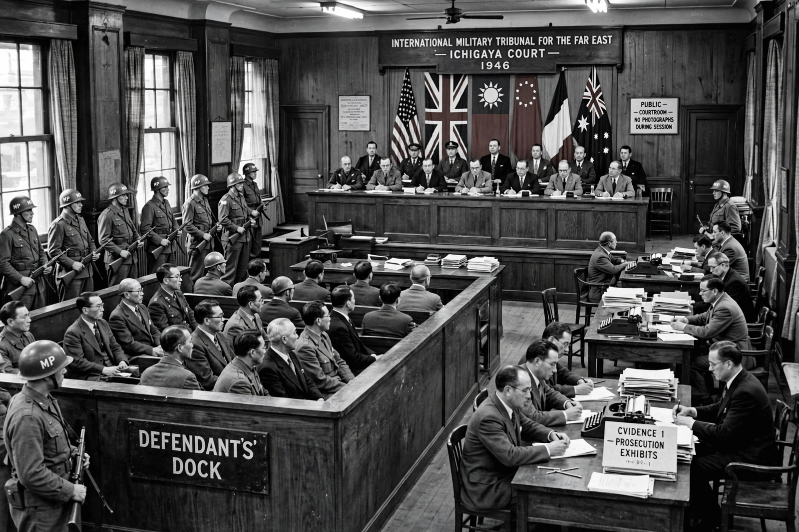

| Held | 29 April 1946 – 12 November 1948 |
|---|---|
| Location | Ichigaya, Tokyo, Japan |
| Bench | 11 judges from 11 Allied nations; president Sir William Webb (Australia) |
| Defendants | 28 Class-A suspects; 25 tried to verdict |
| Sentences | 7 death; 16 life imprisonment; 2 lesser terms |
| Chief prosecutor | Joseph B. Keenan (US) |
The International Military Tribunal for the Far East (IMTFE), also known as the Tokyo Trial, was the war crimes tribunal convened by the Allied powers after the Second World War to try the leaders of the Empire of Japan for crimes against peace, war crimes and crimes against humanity. Sitting in Tokyo from 1946 to 1948, it was the Asian counterpart of the Nuremberg trials in Europe.
The tribunal was established by a proclamation of General Douglas MacArthur, Supreme Commander for the Allied Powers, in January 1946. Twenty-eight "Class-A" defendants — former prime ministers, foreign ministers, generals and admirals, including wartime premier Hideki Tōjō and former foreign minister Yōsuke Matsuoka — were charged in 55 counts. Two defendants died during the trial and one was declared unfit; the remaining 25 were all convicted. Seven, including Tōjō and General Iwane Matsui (held responsible for the Nanjing Massacre), were sentenced to death and hanged on 23 December 1948; sixteen received life sentences and two lesser terms. Thousands of lower-ranking "Class-B/C" suspects were tried separately in national courts around Asia.
The trial has long been debated. Emperor Hirohito was granted immunity and never charged — a political decision by the occupation authorities that shielded the throne and, critics argue, distorted responsibility. Members of Unit 731, which conducted lethal human experiments, received immunity in exchange for their data. Indian judge Radhabinod Pal dissented entirely, holding that the tribunal was victors' justice and that all defendants should be acquitted; Chinese, Filipino and Dutch judges also wrote separate opinions. The accused death-sentenced men are among the fourteen Class-A war criminals later enshrined at Yasukuni Shrine, a continuing source of diplomatic friction.
Together with Nuremberg, the IMTFE helped establish the principle that individuals — including heads of government — bear criminal responsibility under international law, a foundation for the modern international criminal courts. In Japan, the "Tokyo Trial view of history" remains contested in domestic politics and education.
This article is a recreation from memory for the muse-webcrawl project.